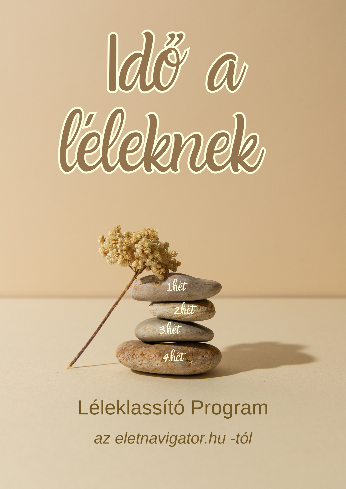

Az ikonra kattintva a kezdőlapra jutsz.
Az ikonra kattintva a kezdőlapra jutsz.

Egy 4 hetes mindfulness / tudatos jelenlét program, amely segít lelassulni, csökkenteni a túlgondolást és újra kapcsolódni önmagadhoz. Napi mindössze 15 perc, saját tempódban, otthon.
🕒 Napi 15 perc
🏡 Otthon végezhető
📥 Azonnal letölthető
Azért, mert hiszem, hogy a belső nyugalom nem kiváltság, hanem tanulható készség.
Sokáig én is azt gondoltam, hogy még jobb időbeosztásra, több motivációra vagy hatékonyabb módszerekre van szükségem. Később rájöttem, hogy nem ezek hiányoznak igazán.
Hanem az, hogy újra kapcsolatba kerüljek önmagammal.
A tudatos jelenlét (mindfulness) gyakorlatai segítettek abban, hogy ne csak túléljem a mindennapokat, hanem valóban meg is éljem őket.
Ebből a tapasztalatból született meg ez a program.
Olyan formában szerettem volna átadni, amely egyszerű, gyakorlatias, kezdők számára is követhető, és a legelfoglaltabb napokba is beilleszthető.
Az Idő a léleknek egy 4 hetes mindfulness / tudatos jelenlét program, amelyet otthon, saját tempódban végezhetsz.
Nem egy hosszú elméleti tananyag.
Nem egy bonyolult kurzus.
Hanem egy vezetett folyamat, amely nap mint nap segít lelassulni, figyelni önmagadra és fokozatosan kialakítani a tudatos jelenlét szokását.
Napi körülbelül 15 perc elegendő ahhoz, hogy elkezdd beépíteni a gyakorlatokat a mindennapjaidba.
Minden azért készült, hogy könnyen alkalmazható legyen a hétköznapokban.
Bár a programot önállóan végzed, nem maradsz magadra.
Az egész anyag úgy épül fel, mintha egy mentor lépésről lépésre vezetne végig az úton.
Nem kell azon gondolkodnod, mivel kezdd vagy hogyan folytasd.
Egyszerűen követed a felépített folyamatot, és napról napra haladsz tovább.
Ha mégis úgy érzed, hogy szükséged van személyes mentorálásra, az oldalon tudsz jelentkezni.
Ez a program neked szól, ha:
A rendszeres gyakorlás segíthet abban, hogy:
Ez nem varázslat, és nem egyik napról a másikra történik.
Apró lépésekből épül fel egy tartósabb belső egyensúly.
Sokszor úgy érezzük, mindenki másra jut idő, csak saját magunkra nem.
Pedig néha már napi 15 perc is elég ahhoz, hogy újra meghalld a saját belső hangodat.
Az Idő a léleknek program nem akar megváltoztatni.
Abban szeretne segíteni, hogy újra kapcsolatba kerülj azzal az emberrel, aki mindig is ott volt benned.
Ha úgy érzed, itt az ideje egy kis csendnek, egy kis lassításnak és több jelenlétnek, szeretettel várlak ebben a 4 hetes utazásban.
Az Idő a léleknek program azonnal letölthető, saját tempódban végezhető, és teljesen kezdőknek is ajánlott.